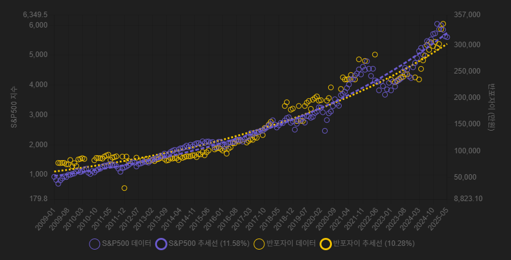
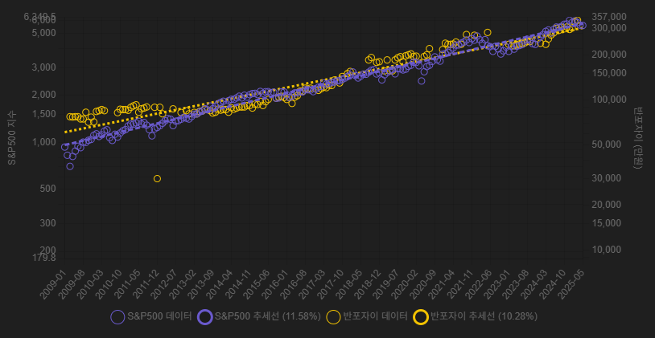

한국에서는 부동산, 특히 아파트에 대한 투자 비중이 매우 높습니다. 그중에서도 서울 강남에 위치한 반포자이 아파트(84A형)는 상징적인 투자처로 꼽힙니다. 자금 여력이 된다면 많은 이들이 이 아파트를 보유하고 싶어 합니다.
그렇다면 충분한 자금이 없다면 이런 투자는 불가능한 걸까요? 미국 대표 지수인 S&P500은 훌륭한 대안이 될 수 있습니다. 주식은 소액으로도 투자할 수 있기 때문입니다.
아래 그래프는 2009년부터 2025년까지의 S&P500 지수와 반포자이 아파트 매매가를 선형 스케일로 나타낸 것입니다. S&P500의 연평균 수익률(CAGR)은 약 11.58%, 반포자이 아파트는 약 10.28%로 나타납니다.
자산의 성과를 비교할 때는 로그 스케일을 사용하는 것이 유용합니다. 기울기를 보는 것만으로 성장률을 비교할 수 있기 때문입니다. 아래는 같은 기간의 로그 스케일 그래프입니다.
투자 시작 시점에 따라 결과는 다르게 나타납니다. 예를 들어:
이처럼 시점을 달리하면 유리한 자산이 달라질 수 있지만, 장기적으로는 유사한 수익률을 기대할 수 있습니다.
아파트를 매수할 때는 보통 전세 세입자를 통해 일부 투자금을 확보합니다. 이는 일종의 무이자 레버리지로, 투자 수익률을 크게 높일 수 있습니다.
그렇다면 주식에서는 어떻게 유사한 효과를 낼 수 있을까요? 신용거래는 위험성이 높지만, S&P500에는 2배 레버리지 ETF인 SSO가 있습니다.
SSO(ProShares Ultra S&P500)는 S&P500의 일일 수익률을 두 배로 추종하는 상품으로, 작은 자본으로 더 큰 시장 노출을 확보할 수 있다는 점에서 부동산의 전세 레버리지와 유사한 효과를 냅니다. 예를 들어, 투자자가 동일한 자금으로 SSO를 활용하면 동일한 원금 대비 더 높은 수익(또는 손실)에 노출되며, 이로 인해 기대 수익률이 확대될 수 있습니다. 물론 그만큼 변동성과 위험도 함께 증가합니다.
서울 아파트는 안정적인 수익과 상징성, 그리고 레버리지 효과로 인해 여전히 많은 투자자들의 선호 대상입니다. 그러나 자금 제약이 있는 경우, S&P500 또는 SSO와 같은 대안 자산을 활용해 유사한 성과를 기대할 수 있습니다.